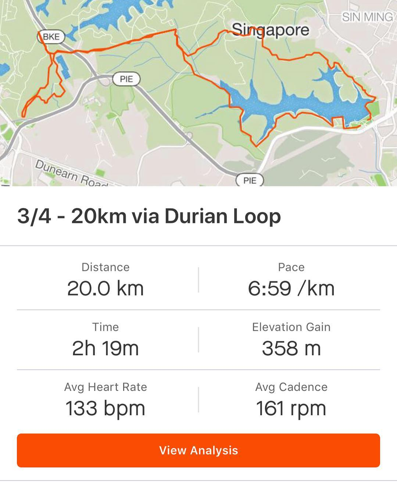

Testing my limits this weekend. In preparation for 100 miles trail run I did 70 km training within 24 hr. As there’s no simulator for 100 miles trail run (it would’ve been insane, right 😄) to enforce my ability for recovery’s well as to prepare myself for tough race day, I gradually increased my 24 hourly total. How it feels like? Like I will need to recover all of Sunday 😬🏃🏽‍♂️😰 😄 my chondoprotector peptides drink really protects my knees which is a great thing! Replenishing my glycogen stores and repairing my sore muscles with baked chicken and sweet corn 🌽 , and some salad 🥗 what are you guys up to this weekend? Who raves what? __ #ultrarunning #ultrarunner #trailrun #trailrunner #swimbikerun #triathlontraining #triathlon #ironmantri #marathon #marathontraining #irunthisbody #runtheworld
2018-09-29 17:48:17
Back to main page